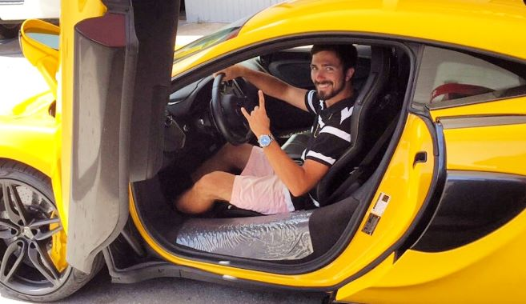

About Me

"In the fell clutch of circumstance I have not winced nor cried aloud. Under the bludgeonings of
chance, my
head is bloody but unbowed. It matters not how straight the gate, how charged with punishments the
scroll,
I am the master of My fate, I am the captain of my soul."
- William Earnest Henley
I believe liturature gives us a glimpse into the life of it's composer. I find value in this because I enjoy learning from other's expereicnes. When I read Henley's "Invictus" I can really resonate with the kind of person he is. When Henely refers to not wincing under the misfortunes of circumstance, he displays a quality of character that I believe we share: Positivity and drive. When life hits us hard there is one decision that controls the aftermath, our reaction. We can choose to get discouraged and become distraught or we can simply accept it, smile, and trust in our ability to prevail. I choose to trust in the fact that if I continue to strive and work hard everything will work out in my favor. Positivity goes a long way. A simple smile to a bystander can make their day. One good deed can save somebody from suicide. I try to be nice to everyone I encounter and spread love where ever I go. No matter how tough adversity gets I will always choose to have positve energy. By controlling my thoughts I can create my own reality. By focusing my mind on the joy of life and what drives me, I can dictate my destiny. After all we only get one life, why waste it being mad at things that do not go our way when we can embrace the beauty of life and enjoy every second as it passes?
Im 22 years old and I live in Atlanta, GA. I enjoy the outdoors and exploring the city on my skateboard. Family and friends are very important to me. I chose to start a career in Web Development simply because I love technology but I also want to be able to provide for my loved ones and I believe the Technology Field is the key to the future. I chose not to bore you with random facts about my life and instead I gave a brief look of how my brain opperates. Thoughts are powerful, so I hope my insights about life are of benefit. Now that you have an idea of how I think, take a look at some of my work. I gaurantee you wont be disapointed.